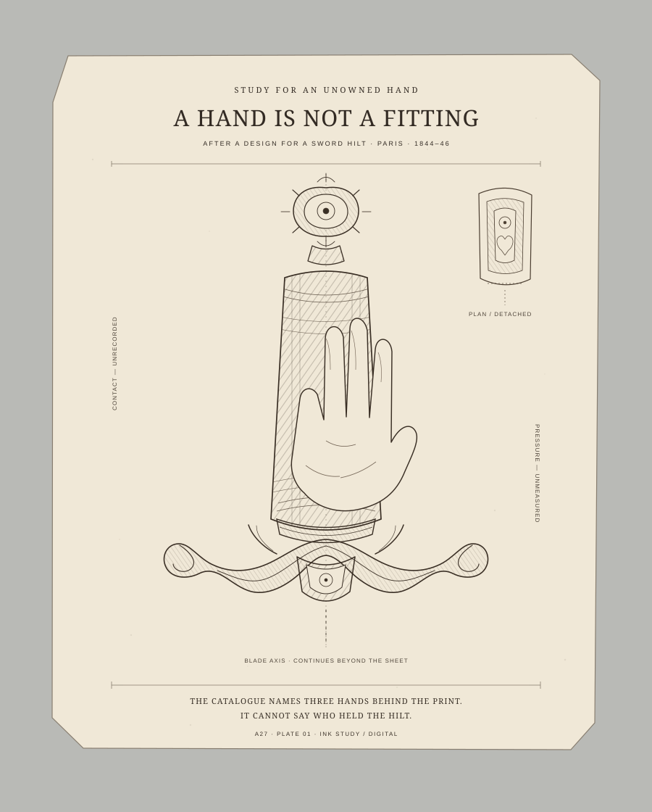
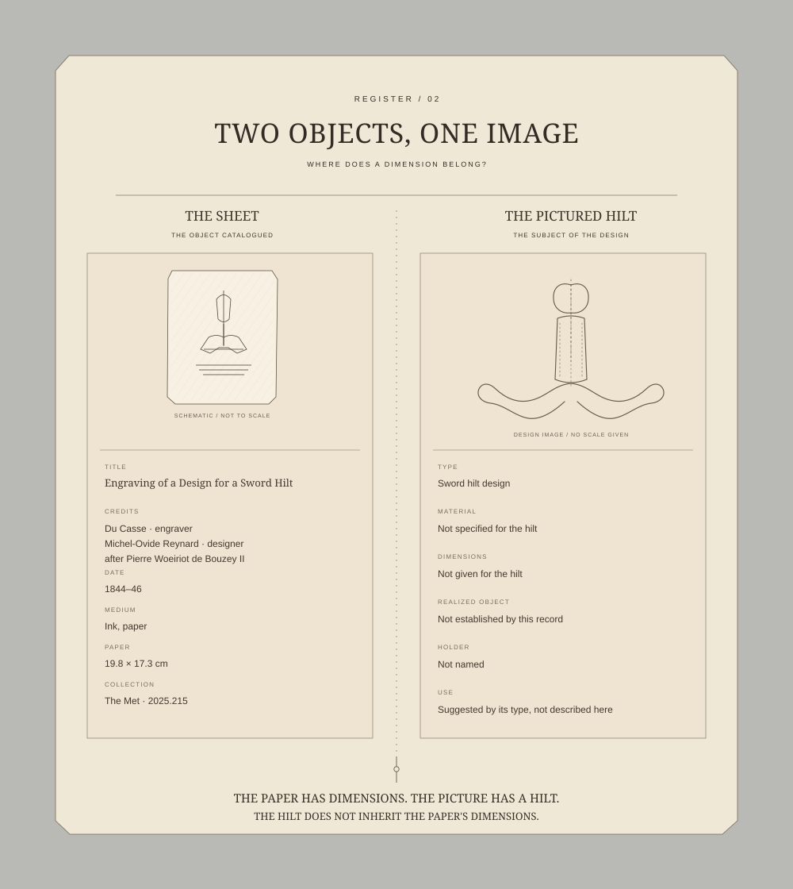
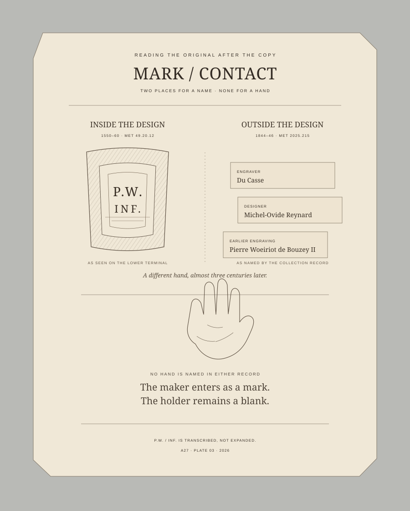

A hand is not a fitting
A27 · Plate 01 · 2026

The collection record names engraver Du Casse, designer Michel-Ovide Reynard, and Pierre Woeiriot de Bouzey II, whose earlier design this print follows. It cannot say who held the hilt. This plate gives that absent grasp a space without filling it with a particular person.

The Met gives the print's paper dimensions as 19.8 × 17.3 cm. The hilt pictured within it has no measurements supplied in this record.
The Met's curators describe ornament prints as sources for later designs; this record does not say whether this sheet was used that way. Read their overview.

The earlier Woeiriot design is dated 1550–60. Its terminal carries the visible initials “P.W. / INF.” The 1840s sheet also has red writing along its lower edge, apparently “Woeiriot · 1555”; the collection record does not interpret it.
Earlier source: The Metropolitan Museum of Art, object 49.20.12.
See the two source impressions side by side: After, not alike.